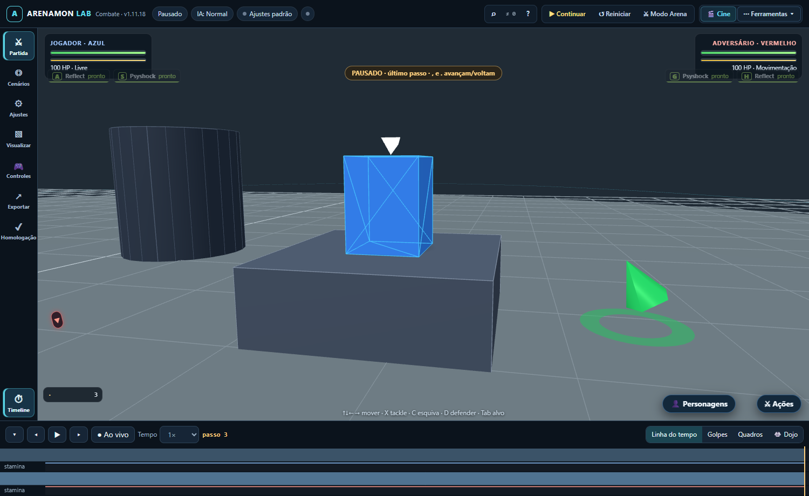

Hitbox alinhada e colisores sólidos
A captura abaixo foi produzida automaticamente no HTML compilado, offline, pelo Edge via Playwright.
1,00 maltura da plataforma
1,65 mcentro esperado da hitbox
1,65 mcentro medido da hitbox

O que foi coberto
Altura da hitbox sobre plataformas, laterais sólidas durante saltos, caixas giradas, expulsão de penetração profunda e colisão vertical usando groundY.